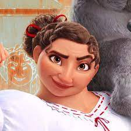

|
Isabella Madrigal has the ability to grow plants and flowers with her mind. |
She is the eldest daughter in the Madrigal Family, she is the golden child of the Madrigal siblings. |
|

|
Luisa Madrigal has super strength! |
She is second born daughter of the Madrigal Family, she is tough, brave, and positive! |

|
Mirabel Madrigal does not have magical powers. |
She is the third born daughter of the family, she is open minded and optimistic! |

|
Dolores Madrigal has super hearing. |
She is the older sister of Antonio and Camilio and is the cousin of Isabela, Luisa, and Mirabel She is reserved and loving. |

|
Camilio Madrigal has the ability to shapeshift. |
He is the younger brother of Dolores, he is a proclaimed "theatre kid" |